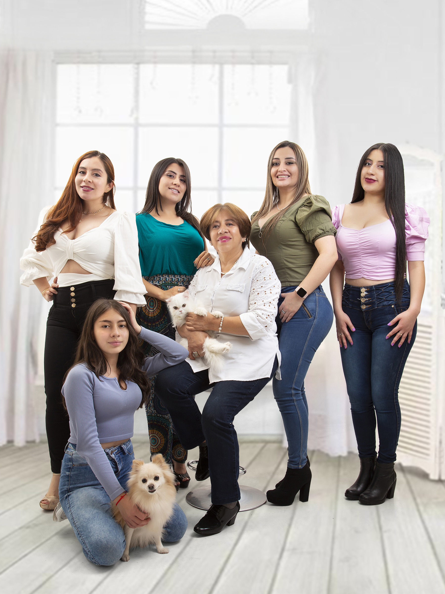

Tatiana Obando
Favorite Foods
- Salmon
- Plantains
- Cuban beans
- Green pancakes
Achievements
Progress in this course(100%)
100%
Progress in running (80%) "80%
Progress in life goals(50%)
"50%"
More about me
My childhood
I was born in Pasto, a city in the Colombian Andes. I have three sisters
who are also my best friends: Erika, Viviana and Paola.
My mom is Magdalena, she has taught me to be resilient and persistent.
